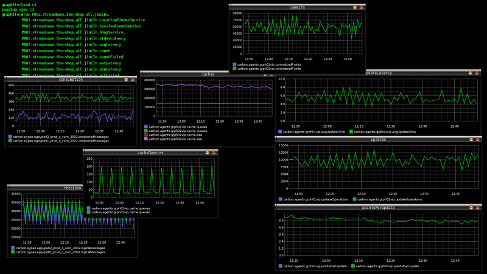
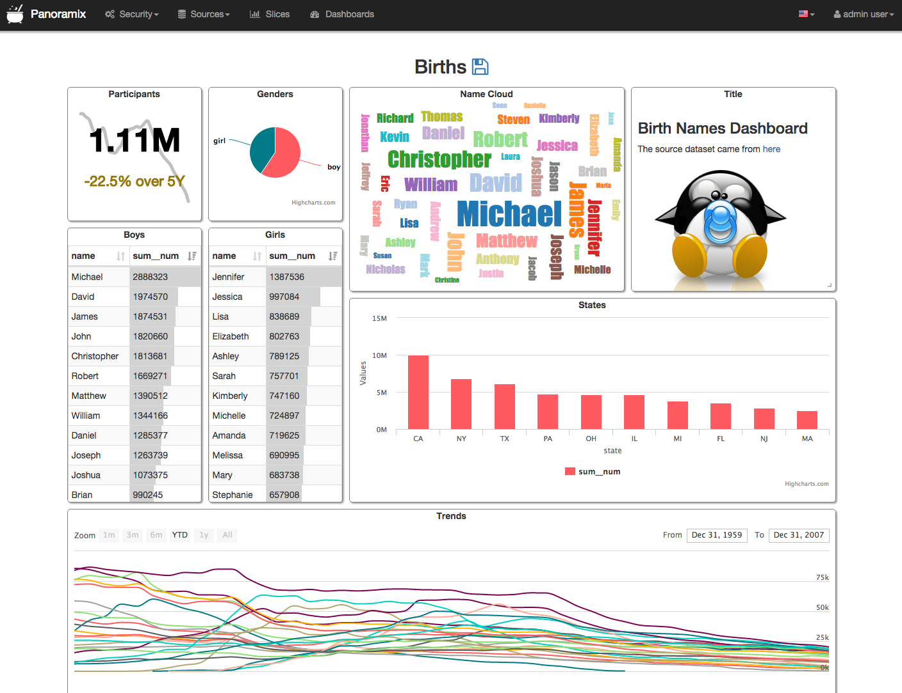

Druid for real-time analysis
Yann Esposito
7 Avril 2016
Druid the Sales Pitch
- Sub-Second Queries
- Real-time Streams
- Scalable to Petabytes
- Deploy Anywhere
- Vibrant Community (Open Source)
Intro
Experience
- Real Time Social Media Analytics
Real Time?
- Ingestion Latency: seconds
- Query Latency: seconds
Demand
- Twitter:
20k msg/s, 1msg = 10ko during 24h
- Facebook public: 1000 to 2000 msg/s continuously
- Low Latency
Reality
- Twitter: 400 msg/s continuously, burst to 1500
- Facebook: 1000 to 2000 msg/s
Origin (PHP)
1st Refactoring (Node.js)
- Ingestion still in PHP
- Node.js, Perl, Java & R for sentiment analysis
- MongoDB
- Manually made time series (Incremental Map/Reduce)
- Manually coded HyperLogLog in js
Return of Experience
Return of Experience
- Ingestion still in PHP (600 msg/s max)
- Node.js, Perl, Java (10 msg/s max)
Too Slow, Bored
2nd Refactoring
- Haskell
- Clojure / Clojurescript
- Kafka / Zookeeper
- Mesos / Marathon
- Elasticsearch
- Druid
2nd Refactoring (FTW!)
2nd Refactoring return of experience
- No limit, everything is scalable
- High availability
- Low latency: Ingestion & User faced querying
- Cheap if done correctly
Thanks Druid!
Demo
- Low Latency High Volume of Data Analysis
- Typically
pulse
DEMO Time
Pre Considerations
Discovered vs Invented
Try to conceptualize a s.t.
- Ingest Events
- Real-Time Queries
- Scalable
- Highly Available
Analytics: timeseries, alerting system, top N, etc…
In the End
Druid concepts are always emerging naturally
Druid
Who?
Metamarkets
Powered by Druid
- Alibaba, Cisco, Criteo, eBay, Hulu, Netflix, Paypal…
Goal
Druid is an open source store designed for real-time exploratory analytics on large data sets.
hosted dashboard that would allow users to arbitrarily explore and visualize event streams.
Concepts
- Column-oriented storage layout
- distributed, shared-nothing architecture
- advanced indexing structure
Key Features
- Sub-second OLAP Queries
- Real-time Streaming Ingestion
- Power Analytic Applications
- Cost Effective
- High Available
- Scalable
Right for me?
- require fast aggregations
- exploratory analytics
- analysis in real-time
- lots of data (trillions of events, petabytes of data)
- no single point of failure
High Level Architecture
Inspiration
Index / Immutability
Druid indexes data to create mostly immutable views.
Storage
Store data in custom column format highly optimized for aggregation & filter.
Specialized Nodes
- A Druid cluster is composed of various type of nodes
- Each designed to do a small set of things very well
- Nodes don’t need to be deployed on individual hardware
- Many node types can be colocated in production
Druid vs X
Elasticsearch
- resource requirement much higher for ingestion & aggregation
- No data summarization (100x in real world data)
Key/Value Stores (HBase/Cassandra/OpenTSDB)
- Must Pre-compute Result
- Exponential storage
- Hours of pre-processing time
- Use the dimensions as key (like in OpenTSDB)
- No filter index other than range
- Hard for complex predicates
Spark
- Druid can be used to accelerate OLAP queries in Spark
- Druid focuses on the latencies to ingest and serve queries
- Too long for end user to arbitrarily explore data
SQL-on-Hadoop (Impala/Drill/Spark SQL/Presto)
- Queries: more data transfer between nodes
- Data Ingestion: bottleneck by backing store
- Query Flexibility: more flexible (full joins)
Data
Concepts
- Timestamp column: query centered on time axis
- Dimension columns: strings (used to filter or to group)
- Metric columns: used for aggregations (count, sum, mean, etc…)
Indexing
- Immutable snapshots of data
- data structure highly optimized for analytic queries
- Each column is stored separately
- Indexes data on a per shard (segment) level
Loading
Querying
- JSON over HTTP
- Single Table Operations, no joins.
Segments
- Per time interval
- skip segments when querying
- Immutable
- Cache friendly
- No locking
- Versioned
- No locking
- Read-write concurrency
Roll-up
Example
timestamp page ... added deleted
2011-01-01T00:01:35Z Cthulhu 10 65
2011-01-01T00:03:63Z Cthulhu 15 62
2011-01-01T01:04:51Z Cthulhu 32 45
2011-01-01T01:01:00Z Azatoth 17 87
2011-01-01T01:02:00Z Azatoth 43 99
2011-01-01T02:03:00Z Azatoth 12 53
timestamp page ... nb added deleted
2011-01-01T00:00:00Z Cthulhu 2 25 127
2011-01-01T01:00:00Z Cthulhu 1 32 45
2011-01-01T01:00:00Z Azatoth 2 60 186
2011-01-01T02:00:00Z Azatoth 1 12 53
as SQL
GROUP BY timestamp, page, nb, added, deleted
:: nb = COUNT(1)
, added = SUM(added)
, deleted = SUM(deleted)
In practice can dramatically reduce the size (up to x100)
Segments
Sharding
sampleData_2011-01-01T01:00:00:00Z_2011-01-01T02:00:00:00Z_v1_0
timestamp page ... nb added deleted
2011-01-01T01:00:00Z Cthulhu 1 20 45
2011-01-01T01:00:00Z Azatoth 1 30 106
sampleData_2011-01-01T01:00:00:00Z_2011-01-01T02:00:00:00Z_v1_0
timestamp page ... nb added deleted
2011-01-01T01:00:00Z Cthulhu 1 12 45
2011-01-01T01:00:00Z Azatoth 2 30 80
Core Data Structure

- dictionary
- a bitmap for each value
- a list of the columns values encoded using the dictionary
Example
dictionary: { "Cthulhu": 0
, "Azatoth": 1 }
column data: [0, 0, 1, 1]
bitmaps (one for each value of the column):
value="Cthulhu": [1,1,0,0]
value="Azatoth": [0,0,1,1]
Example (multiple matches)
dictionary: { "Cthulhu": 0
, "Azatoth": 1 }
column data: [0, [0,1], 1, 1]
bitmaps (one for each value of the column):
value="Cthulhu": [1,1,0,0]
value="Azatoth": [0,1,1,1]
Real-time ingestion
- Via Real-Time Node and Firehose
- No redundancy or HA, thus not recommended
- Via Indexing Service and Tranquility API
- Core API
- Integration with Streaming Frameworks
- HTTP Server
- Kafka Consumer
Batch Ingestion
Real-time Ingestion
Task 1: [ Interval ][ Window ]
Task 2: [ ]
----------------------------------------------------->
time
Querying
Query types
- Group by: group by multiple dimensions
- Top N: like grouping by a single dimension
- Timeseries: without grouping over dimensions
- Search: Dimensions lookup
- Time Boundary: Find available data timeframe
- Metadata queries
Example(s)
{"queryType": "groupBy",
"dataSource": "druidtest",
"granularity": "all",
"dimensions": [],
"aggregations": [
{"type": "count", "name": "rows"},
{"type": "longSum", "name": "imps", "fieldName": "impressions"},
{"type": "doubleSum", "name": "wp", "fieldName": "wp"}
],
"intervals": ["2010-01-01T00:00/2020-01-01T00"]}
Result
[ {
"version" : "v1",
"timestamp" : "2010-01-01T00:00:00.000Z",
"event" : {
"imps" : 5,
"wp" : 15000.0,
"rows" : 5
}
} ]
Caching
- Historical node level
- Broker Level
- By segment and query
groupBy is disabled on purpose!
- By default: local caching
Druid Components
Druid
- Real-time Nodes
- Historical Nodes
- Broker Nodes
- Coordinator
- For indexing:
Also
- Deep Storage (S3, HDFS, …)
- Metadata Storage (SQL)
- Load Balancer
- Cache
Coordinator
- Real-time Nodes (pull data, index it)
- Historical Nodes (keep old segments)
- Broker Nodes (route queries to RT & Hist. nodes, merge)
- Coordinator (manage segemnts)
- For indexing:
- Overlord (distribute task to the middle manager)
- Middle Manager (execute tasks via Peons)
When not to choose Druid
- Data is not time-series
- Cardinality is very high
- Number of dimensions is high
- Setup cost must be avoided
Graphite (metrics)
__
Graphite
Pivot (exploring data)

Pivot
Caravel

Caravel
Conclusions
Precompute your time series?
Don’t reinvent it
- need a user facing API
- need time series on many dimensions
- need real-time
- big volume of data
Druid way is the right way!
- Push in kafka
- Add the right dimensions
- Push in druid
- ???
- Profit!